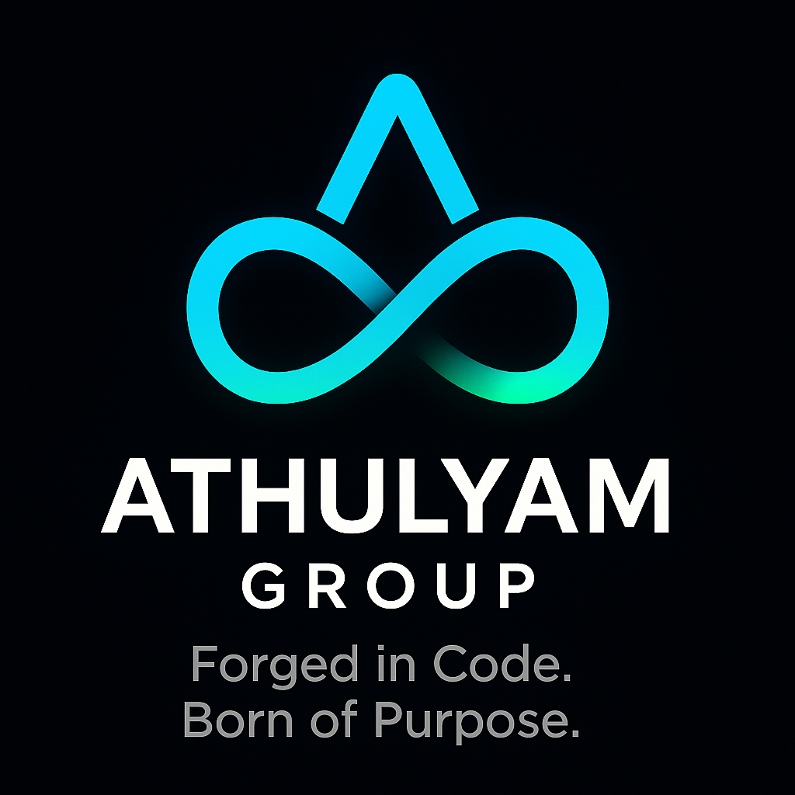

Forged in code. Born of purpose.
Each division of Athulyam represents a pillar of our kingdom — united by precision, innovation, and the pursuit of perfect balance between man and machine.
The heart and command center of the Athulyam ecosystem. Athulyam Enterprises oversees all divisions — guiding innovation, strategy, and integration across our technology and research arms. It represents the philosophy of balance, leadership, and continuity within the Athulyam kingdom.
The foundation of our craft — where hardware meets mastery. TechWorks provides hardware diagnostics, optimization, and tuning for high-performance systems. Every circuit we touch becomes a testament to efficiency and endurance.
Custom-built, Linux-tuned systems handcrafted for creators, engineers, and thinkers. Each machine is a fusion of performance and aesthetic — built not just to compute, but to inspire.
The heartbeat of the Athulyam ecosystem — our custom kernel and userland designed for stability, privacy, and precision. linux-nouas embodies the philosophy of control, balance, and adaptability.
Our shield of defense — building secure infrastructures, hardened systems, and privacy-oriented architectures to keep the digital realm resilient.
The crucible of experimentation and creation. Here, ideas evolve into innovation — from kernel builds to R&D in system architecture, the Forge is where tomorrow takes shape.
Athulyam is a multidisciplinary technology ecosystem — a union of human intuition and computational precision. Founded on the belief that technology can reflect consciousness, Athulyam exists to build systems that are stable, sustainable, and deeply human.
From the forge of innovation, Athulyam crafts both hardware and software — each component refined through purpose. Our work spans across system design, optimization, and digital security, connecting engineering and artistry into a single continuum.
At its core, Athulyam is not just an enterprise — it is a living philosophy. Every build, every kernel, every idea forged here carries one essence: “A bond between human and code, forged in code.”